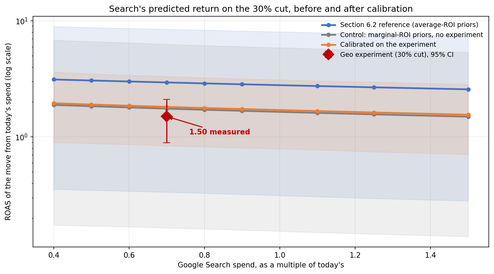

6.4 用实验校准 MMM
关于中文版
本页是英文版 Marketing Science in Python 的AI翻译。英文版为正式版本，如有出入，以英文版为准。代码、Notebook 和图片中的文字保持英文。 阅读英文版
在地理实验运行之前，MMM 已经预测了把 Google Search 削减 30% 的代价：每移除一美元损失 $2.95 的收入，90% 可信区间从 0.34 到 8.48。第 6.3 节的实验测得 1.500，95% 置信区间从 0.892 到 2.109。模型对该渠道的整体价值估计得大致不差，对削减代价的估计却高了约一倍，而且它的区间无论朝哪个方向都宽得无法据此行动。两者都不意外。三年的历史里 Search 支出几乎没有动过，所以模型对 Search 的估计大体上就是它起步时的先验，而这次实验是关于该渠道的第一份因果证据。
校准把这份证据放进模型。实验测量的是一个渠道在一个运行点上、一个窗口内的表现；第 6.2 节的模型仍然要为五个渠道设定预算。所以我们把结果转换成一个先验，重新拟合，然后检查推荐是否改变。目标不是让模型与实验一致。目标是弄清更好的证据是否改变了决策，如果没有，为什么没有。因为这里的结果是收入，Meridian 的 ROI 在数值上就是收入 ROAS；正文说 ROAS，代码保留 Meridian 的命名。

配套 Notebook：sec6.2_6.4_mmm_meridian.ipynb 与第 6.2 节共用。它的第 14-18 步记录模型对这次测试的自身预测，把实验估计值转换为先验，重新拟合模型，并重新优化预算。
在 GitHub 上查看
让证据与模型量对应
实验测量的是一段支出的回报：当 Search 在八周内从预算的 100% 降到 70% 时，企业每美元损失了多少。模型为同一渠道报告的是另外两种回报。平均 ROAS 用 Search 的总增量收入除以它的总支出，是从零开始平均的回报。边际 ROAS是响应曲线在当前支出水平上的斜率，是下一美元的回报。在饱和曲线上，早期的美元比后期的美元干得更卖力，所以只要曲线开始弯曲，平均 ROAS 就位于边际 ROAS 之上（图 2）。所测削减是在支出最顶端的 30% 上对曲线取平均，因此它落在接近边际回报、远低于平均回报的位置。

Meridian 的默认先验 roi_m 是针对平均 ROAS 的。把经时长调整的估计值 1.71 放到那个先验上，模型会照办：Notebook 试了一下，后验平均 ROAS 落在 1.96，而植入的真实值是 3.30。模型现在被迫用一条从零起算的回报低了 40% 的曲线来解释 Search。这里边际回报和对所测削减的预测仍然落在真实值附近，分别是 1.59 和 1.44，因为曲线在 Search 区间的顶端几乎是直的，所以出错的是平均值这个量；在弯曲更厉害的渠道上，局部读数也会跟着出错。在 TikTok 上，其边际回报约为平均回报的四分之一，同样的替换会错上近四倍。一次测量应该放在与之匹配的参数上。
把实验转换为先验
Meridian 也可以把先验放在边际 ROI 上，用 media_prior_type="mroi"。这个参数是支出增加 1% 的回报。实验测量的是八周内 30% 的削减，所以它是通过一个近似转换来为先验提供信息，而不是直接观测这个参数：关于曲线形状、关于延续效应（carryover）、关于八个市场如何迁移到全国的假设，都仍然是结果的一部分。对 Search 来说，区段和斜率相距很近，1.50 对比植入的 1.57；对 TV/CTV 这样的慢渠道则不然，第 6.5 节会展示这一点。
这个转换有三个部分。时长修正中心值，以补上测试窗口错过的延续效应。第八周做出的削减在第九周和第十周仍然要损失收入，所以即便 Search 的半衰期只有一周，一次持续八周的削减约有 12% 的效应落在窗口之后，中心值从 1.50 移到 1.71。这个比例是一个近似，来自逐周等量变动和线性延续权重；饱和效应和实际的支出路径都可能改变它。对 TV/CTV 这样的慢渠道，修正量会大上好几倍。支出规模拓宽先验。八个测试市场的支出速率约为全国的五分之一，测试离渠道规模越远，其结果可被假定迁移的程度就越低。这一项把标准误从 0.257 提到 0.64，而下面的转换不确定性再把它提到 0.69。实验自身的精度没有问题；拓宽先验的原因是八个市场只占渠道的五分之一。Notebook 会打印每一项，外加两个在这里几乎不起作用的小项。
转换不确定性是第三部分，而且它是我们加的，不是 Google 的：30% 的区段与 1% 的斜率之间的差距是一个建模假设，所以要把中心值的一个明示比例（这里是 15%）加到宽度上，这样一次非常精确的实验就不会产生一个声称精确知道斜率的先验。其余四个渠道保留一个弱边际 ROI 先验 LogNormal(-0.49, 0.90)，即第 6.2 节的弱 ROAS 先验在边际尺度上的重述。不要把它设得更平：在饱和曲线上，边际 ROI 上的弥散先验会让平均 ROI 失去界限，未校准的渠道会带着毫无用处的区间回来。
import numpy as np
import tensorflow as tf
import tensorflow_probability as tfp
from meridian import constants
from meridian.model import prior_distribution, spec
channels = list(data.media_channel.values)
target = channels.index("Google Search")
# Weak marginal-ROI prior for every channel, then the experiment on Search.
mroi_mu = np.full(len(channels), 0.2 + np.log(0.5))
mroi_sigma = np.full(len(channels), 0.9)
mroi_mu[target], mroi_sigma[target] = 0.4635, 0.3877 # centre 1.71, SE 0.69, from the translation above
prior = prior_distribution.PriorDistribution(
mroi_m=tfp.distributions.LogNormal(
loc=tf.constant(mroi_mu, dtype=tf.float32),
scale=tf.constant(mroi_sigma, dtype=tf.float32),
name=constants.MROI_M,
),
alpha_m=prior.alpha_m, # Section 6.2's adstock prior, reused as is
ec_m=prior.ec_m, # Section 6.2's saturation prior, reused as is
)
# Same lag, same holdout weeks as Section 6.2, so the only change is the prior.
model_spec = spec.ModelSpec(prior=prior, media_prior_type="mroi", max_lag=12,
adstock_decay_spec="geometric", holdout_id=holdout_id)然后重新拟合模型，而不是事后去编辑它的 ROAS 表。被校准的渠道应当朝证据移动，但不必恰好落在 1.500 上；似然、曲线和先验都有发言权。收紧一个渠道也会在相关的渠道之间重新分配功劳，所以重新拟合之后要读每一个渠道和整体拟合。
什么变了？
三次拟合让比较公平：作为参考的第 6.2 节模型，一次切换到边际 ROI 先验但不含实验的对照拟合，以及校准后的拟合。只有最后一个见过地理测试，所以后两列之间的差距就是证据本身，别无其他；前两列之间的差距是先验设定的变化。第一行把支出对比和窗口长度与实验对齐。日历日期和地理覆盖范围仍然不同。
| Google Search | 6.2 参考 | 之前（对照） | 之后（校准） |
|---|---|---|---|
| 所测削减的预测代价 | 2.95 [0.34, 8.48] | 1.75 [0.16, 6.29] | 1.82 [0.84, 3.32] |
| 平均 ROAS | 4.06 [0.46, 11.67] | 2.63 [0.22, 9.58] | 2.82 [1.14, 5.26] |
| 边际 ROAS | 3.29 [0.36, 9.51] | 1.95 [0.18, 7.03] | 2.00 [0.93, 3.63] |
| 相对半宽 | 1.39 | 1.76 | 0.67 |
| 第 6.2 节的宽度规则 | 过宽 | 过宽 | 通过 |
| 优化器动作 | −30.0% | −30.0% | −30.0% |
变的是宽度。与对照相比，校准把 Search 的边际回报从 1.95 移到 2.00，而植入的真实值是 1.57，并把它的相对半宽从 1.76 削到 0.67。模型对所测削减的预测从 1.75 移到 1.82，而测得的是 1.50。两个点估计都不是重点；区间才是。图 3 沿着曲线展示了这一点：参考拟合读数接近 3，带宽横跨一个数量级；对照拟合读数低于 2，带宽同样；校准后的曲线穿过实验区间，带宽只有三分之一。参考拟合与校准拟合之间更大的差距主要来自先验设定的变化，而不是实验，这正是对照列存在的原因。

仍然未知的部分也值得点明。平均 ROAS 那一行落在 2.82，而植入的真实值是 3.30，区间上达 5.3：实验从未测量过从零起算的回报，所以那一行是模型的外推，不是证据。第 6.2 节的宽度规则现在通过了，但那条规则检查的是精度，不是盈利能力；削减本身是由第 6.3 节的门槛裁定的，而释放出来的预算流向 OOH 和 Meta，因为它们的边际区间起点分别是 2.6 和 3.6，高于 Search 的估计值 2.0，尽管并不高于其区间上限。Search 在每一列都停在 −30% 的下限（图 4），而 TV/CTV 和 TikTok 略有移动，主要发生在参考拟合与对照拟合之间，那是先验设定而非实验所致。在更窄的按市场聚类宽度下做同样的校准，边际估计值是 1.85，半宽 0.48；分配同样没有移动。所以，实验在所述的边际贡献率和窗口下支持所测削减，校准把这份证据带进了分配模型，而它提出的重新分配仍然取决于响应曲线、从八个市场到全国的迁移，以及优化器看不到的业务约束。

按校准后的计划行动之前
四个问题，按评审会议应有的提问顺序。
- 估计目标对齐。 实验测量的是否是同一个结果、同一个对比，以及推荐方案真的会到达的运行点？
- 实验可信度。 它的统计功效是否足以支撑这个决策，是否按设计执行，是否没有溢出效应和日历冲击？
- 模型完整性。 重新拟合之后，拟合度、响应曲线和其他渠道是否仍然合理？
- 决策稳定性。 在各种站得住脚的转换宽度下，推荐的行动是否成立？如果在它们之间发生反转，那么无论点估计怎么说，证据都还没有解决这个决策。
数据质量和一般的模型验证属于第 6.2 节，这里不必重复。
你不需要为每个渠道都做实验。在支出重大、模型区间很宽、而且结果可能改变行动的地方做测试。在每次测试前记录模型的预测，就像第 6.2 节的决策卡那样。在下一次分配之前刷新模型，让下一次分歧来选择下一次测试。
要点
- 校准之前先对齐估计目标。对一段支出的测量通过近似转换为边际参数提供信息，转换中的假设以宽度的形式随之而行。
- 重新拟合整个模型并保留一次对照拟合，这样证据就与先验设定的变化区分开来。这里证据几乎没有移动 Search 的估计值，却把它的区间削去了三分之二。
- 用校准让你能支持什么来评判它。实验裁定了削减；校准把它带进了分配模型，而该模型的重新分配仍然依赖于曲线、迁移假设和业务约束。